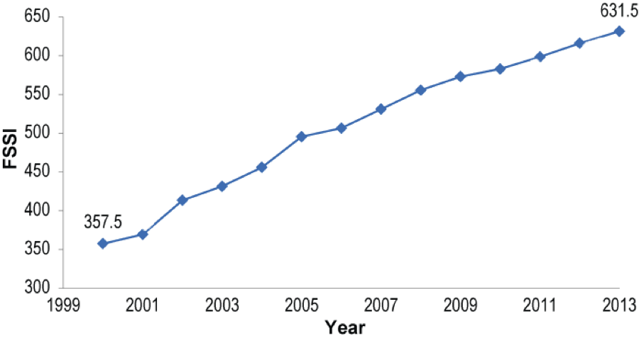

Greenhouse gases, sea level rise, energy crisis, factory-farmed meat, deforestation, oil spills, the dead zone in the Gulf - man, we've really messed up the environment. That's what a lot of news-savvy Americans tend to think. We're still figuring out what damage is irreparable and what parts can still be salvaged. But in the face of all this gloom, there's a scaly, smelly glimmer of hope: the fish.
For over a century, American oceans were drastically overfished. "Prior to 1976, there was no federal legislation that managed U.S. fisheries," says Ted Morton, the director of Federal US Oceans at the Pew Charitable Trusts, a nonprofit environmental organization. "Fishing was going on, but there was no management system in place that was encompassing all of US waters." As a result, many groups of fish, like the emblematic cod or the popular red snapper, were depleted beyond sustainable levels.
Starting in 1997, the National Oceanic and Atmospheric Administration (NOAA) began tracking the status of fish populations with the help of various research institutions and fisheries. What they found was somewhat startling: not only were the vast majority of fish populations overfished, but there were significant regional differences between the east and west coasts.
Starting in 2005, NOAA assigned a number to each fish stock, or group of one species that is considered reproductively independent, to indicate its overall health. That number is called a Fish Stock Sustainability Index (FSSI), ranges from 0 to 4 to indicate the fish's population and known status. Generally, if a stock has a higher FSSI number, it is in healthier shape and less subject to overfishing. With collaboration from different research institutions around the country, NOAA issues the reports quarterly.
Armed with the FSSI, NOAA could start setting annual catch limits for each fish stock, measured by weight. This has been the most successful attempt to oversee a universal reduction in overfishing, says Karen Greene, a representative from NOAA's Office of Sustainable Fisheries. Since 2000, the overall FSSI score has almost doubled.
Researchers in the past few decades have toiled to determine how to keep fish populations sustainable - just how many fish can be removed so that the stock's reprouductive members can keep the population stable. But the process hasn't been smooth; the initial catch limits are still "a very crude tool", Greene says, to understand how much a stock is being overfished.
While administrators on the the East Coast have spent years tinkering with their catch limits, the West Coast and Alaska already had a leg up in making their stocks sustainable. "On the West Coast they've. . . chosen to have catch limits in place for a long time," Greene says. "They have highly productive fisheries there, so they don't have chronic overfishing problem like in New England." Kristan Blackhart, also of NOAA, agrees, attesting the region's success to the directors' focus on streamlining the stock assessment process and reducing bureaucratic excesses.
The data collected from the varying stocks reflects the West Coast's success. The NOAA report for the last quarter of 2013 shows that FSSI scores of fish stocks in the Pacific are just slightly higher than those of Atlantic stocks.
| Atlantic | Pacific | |
| Total FSSI | 325.5 | 168.5 |
| Total number of entries | 125 | 63 |
| Average FSSI score | 2.604 | 2.675 |
Since the East Coast stocks have been overfished longer than any other ocean around the U.S., that's where the most dramatic changes have occurred. "There is a longer history of fishing in Northeast, " Morton says. "It's really been centuries of effort, even prior to colonial times. "
The numbers for the white hake show that NOAA's catch limits are working. The less white hake that's caught, the more that exist in the seas. As NOAA has determined better catch limits, the hake has slowly regenerated. Over time, momentum builds; the more fish that are left in the water, the more that can reproduce and build up the stock's population.
In stark contrast to the white hake, the blue marlin population continues to plummet. A large, popular fish spanning from the coasts of Argentina to Nova Scotia, blue marlin are vulnerable to fishermen from countries with fewer catch regulations. Rebuilding this population, Greene says, will depend a combined international effort to curtail overfishing. A 2011 report published in Spain notes the necessity of continued research about the stock's health and population. With better information and cooperation, the blue marlin may still have a chance at a comeback.
Calculated from the FSSI data from late 2013, only 22 percent of stocks have management strategies listed as, "continue rebuilding," or, "reduce mortality." This means that the other 78 percent are in good shape, well on their way to being sustainable if they're not there already.
"I think it's a success in the making," says Morton. " As we are transitioning, we are finding out more and more about the status of our fisheries. But we still have to take strides to be sure we have good data to effectively manage them."
As fish stocks continue to rebuild, the FSSI scores won't necessarily show it. "The trend line is really going to start flattening out," Greene says.Finely-tuned catch limits for overfished stocks will elevate FSSI scores to their maximum. The improvement on this scale may not be as much now as in the past, Greene says, but the overall stocks will be healthier. "A lot of scientists say that we've already reached the limit in the amount of wild fish that [can be caught sustainably]," Morton says. "We have to be smart about our management and thinking about the needs of future generations."
//All data courtesy of NOAA.//